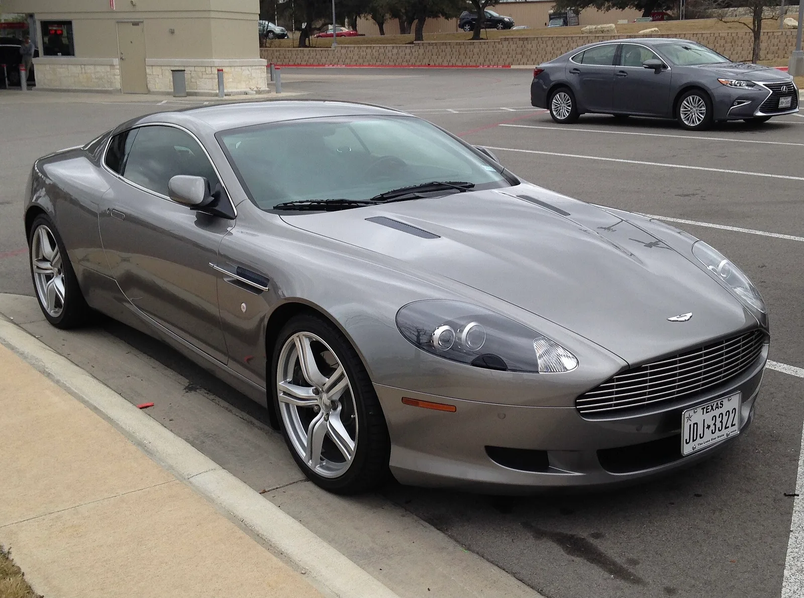
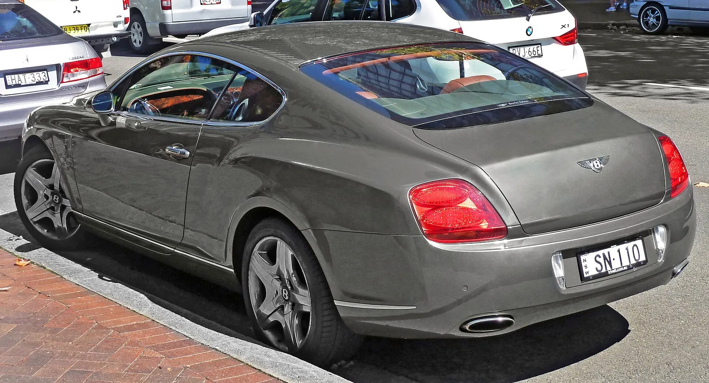
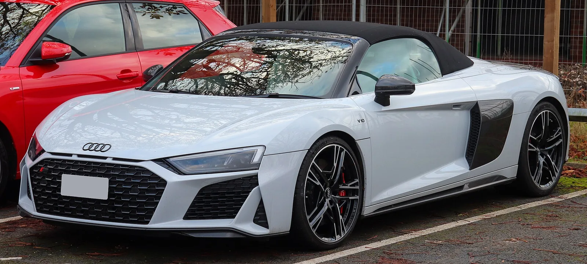

▲ 2000년대 V12 그랜드투어러 아스턴마틴 DB9도 이제 3만~6만 달러대에 거래된다 ⓒ Wikimedia Commons
V8, V10, 심지어 V12 엔진을 얹은 그랜드투어러와 슈퍼카가 지금 미국 중고차 시장에서 풀옵션 BMW 3시리즈와 비슷한 가격에 팔리고 있다. 미국 자동차 매체 CarBuzz는 최근 보도에서, M340i 한 대 값인 약 6만5000달러(약 9000만 원) 예산이면 아스턴마틴·마세라티·벤틀리·아우디의 다기통 모델을 살 수 있는 시대가 됐다고 전했다.
배기량과 실린더 수만 보면 여전히 이국적인 이 차들이 왜 이렇게까지 저렴해졌을까. 감가율, 유지보수비 부담, 그리고 업계 전반의 전동화 전환이 맞물린 결과라는 게 CarBuzz의 분석이다.
1. 무슨 일이 벌어지고 있나 — CarBuzz가 짚은 '역전 현상'
CarBuzz는 "감성적인 운전 경험과 유서 깊은 브랜드를, 독일 스포츠세단 한 대 값에 손에 넣을 수 있는 기회"라는 표현으로 이번 현상을 요약했다. 기준점은 BMW의 준중형 스포츠세단 3시리즈 중에서도 고성능 트림인 M340i의 풀옵션 가격, 약 6만5000달러다.
이 예산으로 접근 가능한 모델 목록에는 한때 신차가가 3~4배 이상이었던 브랜드들이 다수 포함됐다. 표를 통해 CarBuzz가 제시한 모델과 현재 시세 구간을 정리했다.
| 모델 | 연식 | 엔진 | 출력 | 미국 중고 시세(추정) |
|---|---|---|---|---|
| 아스턴마틴 DB9 | 2005 | 5.9L V12 | 450마력 | 3만~6만5000달러+ |
| 마세라티 그란투리스모 | 2019 | 4.7L V8 | 454마력 | 약 6만5000달러 |
| 메르세데스-벤츠 CL65 AMG | 2013 | 6.0L V12 트윈터보 | 621마력 | 약 6만5000달러 |
| 벤틀리 컨티넨탈 GT | 2003 | 6.0L W12 트윈터보 | 552마력 | 2만 달러대~ |
| 아우디 R8 V10 스파이더 | 2012 | 5.2L V10 | 525마력 | 약 6만5000달러 |
| 닷지 바이퍼 | 2001 | 8.0L V10 | 450마력 | 약 6만5000달러 |
| 재규어 F-타입 R | 2015 | 5.0L V8 슈퍼차저 | 550마력 | 약 4만5000달러 |
| 페라리 308 GTS | 1980 | 2.9L V8 | 220마력 | 약 6만5000달러 |
※ 미국 현지 매물 시세를 원화 환산 없이 달러 기준 그대로 표기함. 실제 매물가는 주행거리·정비이력·옵션에 따라 크게 달라질 수 있음. 참고: CarBuzz
CarBuzz 원문 기사에서 각 모델의 상세한 시세 근거와 매물 사례를 확인할 수 있다. CarBuzz 원문 기사 바로가기

▲ 사진은 트윈터보 V6(넷투노) 엔진을 얹은 최신 그란투리스모 트로페오다. 기사에서 다루는 2019년식 구형 그란투리스모는 4.7L 자연흡기 V8을 얹은 모델로, 신뢰성 논란 탓에 감가폭이 유독 컸던 사례로 꼽힌다 ⓒ Wikimedia Commons
2. 왜 이렇게 저렴해졌나 — 감가율·유지비·전동화
슈퍼카·익조틱카가 준중형 세단 가격대로 내려온 데는 복합적인 이유가 있다. CarBuzz는 크게 세 가지 요인을 지목했다.
📍 ① 유독 가파른 감가율
고성능 다기통 익조틱카는 신차 시점부터 감가 속도가 대중 브랜드보다 훨씬 빠르다. 초기 럭셔리 프리미엄이 크게 붙는 만큼, 연식이 지나면서 빠지는 절대 금액도 크다. 특히 마세라티는 CarBuzz가 "악명 높은 신뢰성 문제로 가치가 급격히 떨어졌다"고 평가할 정도로 낙폭이 두드러진 사례다.
📍 ② 유지보수비 부담
V10·V12·W12급 다기통 엔진은 부품 수와 정비 난이도가 높아 정기 점검 비용 자체가 대중차의 몇 배에 이른다. 특히 벤틀리처럼 정비 공임이 높은 브랜드는 중고차 구매층이 초기 구입비보다 유지비를 더 부담스러워해 매물가가 낮게 형성되는 경향이 있다.
📍 ③ 전동화 전환에 따른 수요 이동
제조사들이 잇따라 전동화 라인업으로 무게 중심을 옮기면서, 내연기관 고성능 모델에 대한 신차 수요와 중고 수요가 동시에 흔들리고 있다. CarBuzz는 재규어를 예로 들며 "브랜드가 전기차로 완전히 전환하면서, 오히려 남아 있는 가솔린 모델을 소유하는 것 자체가 하나의 투자처럼 여겨지는 역설적 상황"이라고 짚었다.

▲ 2003년형 벤틀리 컨티넨탈 GT는 W12 트윈터보 엔진을 얹었지만 높은 정비 비용 탓에 중고 시세가 2만 달러대까지 내려간 사례로 꼽힌다 ⓒ Wikimedia Commons
3. 비교 기준 — 풀옵션 BMW 3시리즈는 얼마인가
CarBuzz가 제시한 "BMW 3시리즈 값"이라는 기준을 국내 가격으로 환산해보면 체감이 더 명확해진다. 국내 BMW 3시리즈 라인업은 트림에 따라 가격 폭이 크다.
| 트림 | 파워트레인 | 가격대(원) |
|---|---|---|
| 320i | 2.0L 가솔린 | 약 6000만~6600만 원 |
| 320d | 2.0L 디젤 | 약 6300만 원대 |
| M340i xDrive | 3.0L 直6 터보(374마력) | 약 8500만~8600만 원 |
| M340i xDrive 투어링 | 3.0L 直6 터보(왜건) | 약 9300만 원대 |
※ 개별 옵션 추가 시 가격은 더 올라갈 수 있음. 정확한 견적은 BMW 공식 딜러 확인 필요. 참고: BMW 코리아
즉 최상위 트림인 M340i를 옵션까지 채워 넣으면 국내 기준으로도 8500만~9300만 원대에 형성돼 있다. CarBuzz가 말하는 "3시리즈 값"은 대략 이 구간, 미국 기준으로는 6만5000달러 안팎을 의미한다.
4. 그래도 사기 전에 따져야 할 것들
싼 값에 슈퍼카를 산다는 것과, 그 슈퍼카를 저렴하게 유지한다는 것은 완전히 다른 이야기다. 중고 익조틱카 구매를 고려한다면 아래 항목을 반드시 확인해야 한다.

▲ 사진은 2세대(후기형) 아우디 R8 V10 스파이더로, 기사에서 언급한 2012년식 초기형과는 외관 디자인이 다르다. 세대와 무관하게 R8은 상대적으로 최신 플랫폼이라 감가폭이 크지 않지만, V10 특유의 정비 비용은 여전히 부담 요인이다 ⓒ Wikimedia Commons
✅ 중고 슈퍼카·익조틱카 구매 전 체크리스트
· 보험료 — 차량가는 저렴해도 자차보험료는 배기량·차종 등급 기준으로 책정돼 훨씬 높게 나올 수 있음
· 부품 수급 — 단종·희소 모델일수록 순정 부품 대기 기간이 길고 가격이 비쌈
· 정비 인프라 — 브랜드 공식 서비스센터 접근성과 전문 정비소 유무를 미리 확인
· 추가 감가 위험 — 이미 바닥권이라 해도 희귀 트림이 아니면 추가 하락 여지가 있음
· 정비 이력·타이밍벨트/워터펌프 교환 이력 — 고연식 V10·V12 엔진은 예방 정비 비용이 차값을 뛰어넘을 수 있음
📍 '싸게 산 차'가 '비싸게 타는 차'가 되는 이유
다기통 익조틱카는 실린더 수만큼 점화플러그·인젝터·벨트 계통 부품이 늘어난다. 정비 공임도 대중차 대비 높게 책정되는 경우가 많아, 구입 가격보다 연간 유지비 총액이 구매 결정에 더 큰 영향을 미친다는 점을 감안해야 한다.
5. 국내에도 비슷한 흐름이 있을까
국내 수입 중고차 시장에서도 유사한 흐름이 감지된다. 연식이 오래된 그란투리스모, 초기형 컨티넨탈 GT, 구형 R8 계열 등은 국내 수입차 매매 플랫폼에서도 신차 대비 큰 폭으로 낮아진 가격에 매물이 올라오는 경우가 늘고 있다.
다만 국내는 미국과 시장 구조가 다르다는 점을 감안해야 한다. 개별소비세, 취등록세, 수입차 전용 부품 유통 구조 등으로 인해 매물가가 낮아졌다고 해서 실제 보유 비용까지 미국과 동일한 폭으로 낮아지는 것은 아니다. 특히 정식 수입되지 않은 병행수입 모델은 부품 수급이 더 까다로울 수 있어 사전 확인이 필수다.
6. 요약
아스턴마틴 DB9, 마세라티 그란투리스모, 아우디 R8 V10 스파이더, 벤틀리 컨티넨탈 GT 같은 V8·V10·V12 익조틱카가 미국 중고 시장에서 풀옵션 BMW 3시리즈(약 6만5000달러, 국내 기준 8500만~9300만 원)와 비슷한 가격대로 내려왔다.
가격 하락의 배경에는 가파른 감가율, 높은 유지보수비, 전동화 전환에 따른 내연기관 슈퍼카 수요 변화가 겹쳐 있다. 특히 마세라티처럼 신뢰성 이슈로 낙폭이 더 커진 브랜드도 있다.
다만 구입 가격이 낮아졌다고 유지비까지 낮아진 것은 아니다. 보험료, 부품 수급, 정비 인프라, 추가 감가 위험을 꼼꼼히 따져본 뒤 접근해야 하며, 국내 시장에서도 비슷한 흐름이 나타나고 있지만 세금·부품 유통 구조의 차이는 별도로 고려해야 한다.